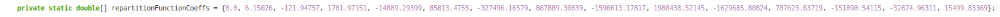
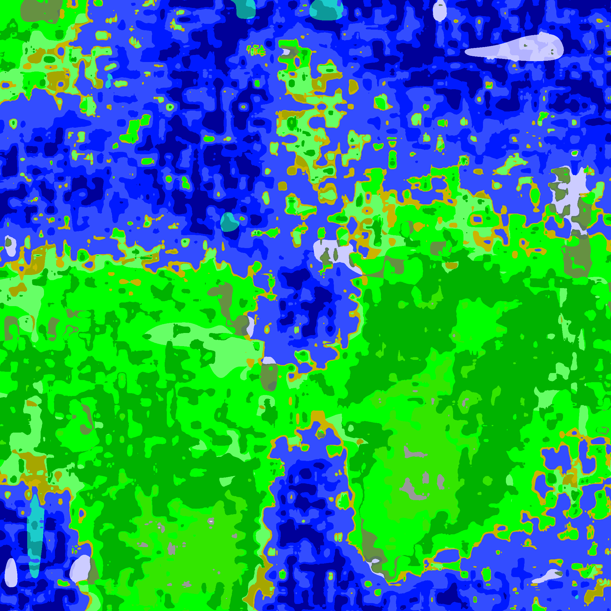

La motivation de ce code vient de l'idée de créer un monde ouvert à la manière de Minecraft (possiblement dans le futur pour un jeu vidéo).
Ainsi je veux qu'il se génère avec une seed.
Pour jouer avec le générateur du monde Minecraft, il y le site chunkbase avec ici un exemple de seed.
Le code du générateur est disponible ici : ########################################################
Puisqu'il y a été fabriquer depuis le debut, il y a deux briques independentes entre-elles.
La première le génération de nombre aléatoire, la secondes la création du monde.
Pour ceci il y a plein de façon de le faire, il y a même des libraries, mais j'ai fait le choix de le faire moi même pour avoir un controle et aussi apprendre au passage.
Le but était donc de généré des suite de nombre sans avoir un sens flagrant avec une fonction f. Donc il faut trouver f tel qu'elle soit chaotique.
Je connaissais alors la fonction : \[ f(x) := 4x(1-x) \]
On peut alors utilisé la suite définit : \[ u_0 = seed \] \[ u_{n+1} = f(u_n)\]
Avec un exmample de son chaos : deux entrées de 0.350000 et 0.350001 après environ 30 itérations fait avec MatPlotLib.
Puisque pour créer un monde il y a plus d'un valeur necessaire, il est facile d'en rajouter. Ce serait comme avoir une liste de u_n qui agissent toute en indépendance.
Un problème qui ne soit va pas trop sur le graphe est la répartition des valeurs, elle n'est pas uniforme, il y en as plus entre 0.4 et 0.6 que 0.1 et 0.3 : en d'autre terme il y en as plus au centre de 0 et 1.
Pour y remédier, on peut appliquer avant l'utilisation des valeurs une fonction de répartition. Je ne savais comment m'y prendre donc
j'ai dessiné une fonction de répartition "r". qui pour un x entre [0,1] donne la proportion de valeur de u_n inférieur à x. On trouve :
Note : Je l'ai fait en générant 10_000 valeurs en triant la liste resultante et l'affichant.
Maintenant il faut une fonction g qui vérifie : \[ \forall x \in [0, 1], g(r(x)) = x \] Je l'ai trouvé avec l'aide de wolfram en définissant g et r comme des fonctions polynomials sur cet interval.

Cette section va être pétite car une fois que l'on a des listes de nombre généré aléatoirement, il suffit de les placer sur une carte de leur donner des rôles.
Par exemple un des premier essaie a été de faire une valeur d'un vecteur l'altitude du monde de placer l'océan, les plages et les plaines à certaines altitudes. Voici le résultat :
Ensuite à la manière de Minecraft on peut rajouter des biomes en les qualifiant par des valeurs générés aléatoirement, comme la température ou l'humidité.
Ce système permet d'être plus facilement cohérent et éviter d'avoir un désert à coté d'une forêt eneigné.
On a alors des résultats comme celui-ci :

Au debut, ce project a été commencer en 2022, lorsque je m'étais lancer l'idée de crée mon jeu vidéo. Cependant ce problème là a bien plus retenu mon attention, ce qui m'as poussé à publier mes résultats.
Maintenant je vois déjà corriger quelque souci, comme la mémoire utilisée. Par exemple si calcule le numéro u_1000 il faudra calculer les 999 précédent.
Si on s'éloigne du centre de la carte il faudra toujours passé par plus de calculs. Un idée de correction serait de créer des balises qui elles sont généré depuis le début mais sauvgarder. Par exemple tous les 100 nombres généré on le sauvegarde. A présent pour généré le 1000, il faudra le 900-ième et non celui depuis le debut.
J'aimerai aussi en faire une applicaiton web où on allie l'exemple pour que l'utilisateur qui lis ce texte peut ensuite jouer avec la génération mais aussi jouer avec les règles de génération (biomes, altitudes, etc...) Pour moi la créativité de ce projets réside surtout là.